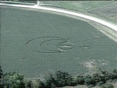

The word of 'radiation' being found at the circle is now fuelinginterest in this formation, and this tidbit has made the headline attention-grabberat the NBC affiliate Channel 4 in Columbus, Ohio. The news station headline'sthe event as "High Radiation Levels" and their video footage is drawn fromsatellite courtesy of the Cincinnati-station's fly-over.
First public attribution for the 'High Radiation Level' statementmay be due to a quote from Jeffrey Wilson during his comments to the WestUnion, Ohio newspaper "People's Defender," and also said there were higherelectrical and magnetic fields inside the formation.
Enclosed below is the text of the Columbus, Ohio report
-- KY
--
URL =
https://www.nbc4columbus.com/news/2456512/detail.html
Investigator Says Crop Circle Has High Radiation Level
POSTED: 4:03 p.m. EDT September 4, 2003
UPDATED: 6:28 p.m. EDT September 4, 2003
PEEBLES, Ohio -- A southern Ohio mystery has some people wonderingif someone -- or something -- from far away stopped by for a visit.
An Adams County woman was checking a soybean field for flood damagelast week when she allegedly discovered crop circles. The field is acrossthe road from the serpent mounds.
Somebelieve what was found in the field is more than just a well-planned joke.Those who have seen the circles say the design appears to be pointing tothe ancient Native American mounds and that the markings in the field andtail of the mounds are similar.
An independent crop-circle investigator visited the site and saidthe radiation levels and electrical and magnetic fields were higher insidethan the land outside the design. The investigator said he should havehis final report next month.
Copyright 2003 by nbc4columbus.com. All rights reserved.
An additional report on the Ohio formation is enclosed below. Letthe reader take special note of the WLWT Channel 5 news allegation that"recent incidents have been disproven." Now wouldn't it be nice if WLWTChannel 5 News could possibly be answerable for their comments and explainexactly what this remark is supposed to mean? What 'recent incidents' do they refer to? Are these local happeningsand does this pertain to crop circles or other formations, as suggested?Might this involve UFO sightings? Or how about incidents of inept journalism?And further, what recent investigation or science has "disproven something?Who is behind this disproving and where might this person be contactedso I can look them up and find out exactly what, if anything, was disproven?Where is the info available? There may or may not be an anomalous origin behind this Serpent Moundformation, but in a perfect world WLWT Channel 5 News in Cincinnati wouldbe answerable for their deeply suspect commentary about alleged 'recentincidents' that have been disproven. It might be a cold day in hell or,in this case, a very radioactive afternoon in the crop circle before WLWTNewzzz might care to clarify, but until then, consider them 'disproven.' Kenny Young ==========NEWS REPORT============ Local Crop Circles: Fake Or Phenomenon? URL = It's been the talk of the town this week, and although recent incidentshave been disproven, there are still WLWT Eyewitness News 5's Brian Hamrick reported Thursday that aninvestigation into the circles is under way. He reported that there arepeople who make a living studying such phenomena, and some have spent sometime this week making measurements and taking photographs right here inthe Tri-State. The artistic geometry on a canvas of soybeans includes several circles,the outermost of which measured about 300 feet in diameter, Hamrick reported. "It's real big news," Candy Faulkner, who works at Serpent Moundacross from the field, said Thursday. "It's fascinating. Somebody camein yesterday saying, 'Where's the crop circles? Where's the crop circles?'" The owner of the land said the only mystery to her is why peoplewant to work through the field and knowingly step on the rest of her soybeans. Longtime resident Mildred Jamison said she's noticed plenty of peoplefrom other counties coming to see the
|